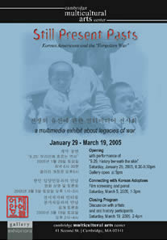

Sites 사이트
Contact InformationFor queries about Still Present Pasts and presenting the exhibit. '어제 안에 오늘'과 전시회 개최에 대한 문의 Professor Ramsay LiemDepartment of Psychology Boston College Chestnut Hill, MA 02445 (617) 552-4108 FAX (617) 552-0523 liem@bc.edu |
 |
{kind=link}
|
April 7 – May 13, 2011 New York University |
|
June 26-September 12, 2010Bishop Museum |
December 13, 2008-May 17, 2009Wing Luke Asian Museum |
Dec. 18, 2007-Jan. 20, 2008Total Museum of Contemporary Art 456-16 Pyongchang-Dong, Chongro-Gu |
November 8-November 25, 2007Kookmin University Gallery 861-1 Jeongneung-Dong Seongbuk-Gu
|
April 14-June 15, 2007Intermedia Arts |
February 11-March 25, 2007LA Artcore Union Center for the Arts |
October 1, 2006-January 14, 2007(Selected Exhibit Installations) |
May 6-June 24, 2006(Selected Exhibit Installations) |
March 8-April 16, 2006Pro Arts Gallery |
August 5 - 7, 2005(Selected Exhibit Installations) |
April 2-16, 2005Jewett Arts CenterWellesley College 106 Central Street Wellesley, MA 02481 (781) 283-2049 www.wellesley.edu/Music/facilities.html#Jewett |
January 29-March 19, 2005Premier Opening |